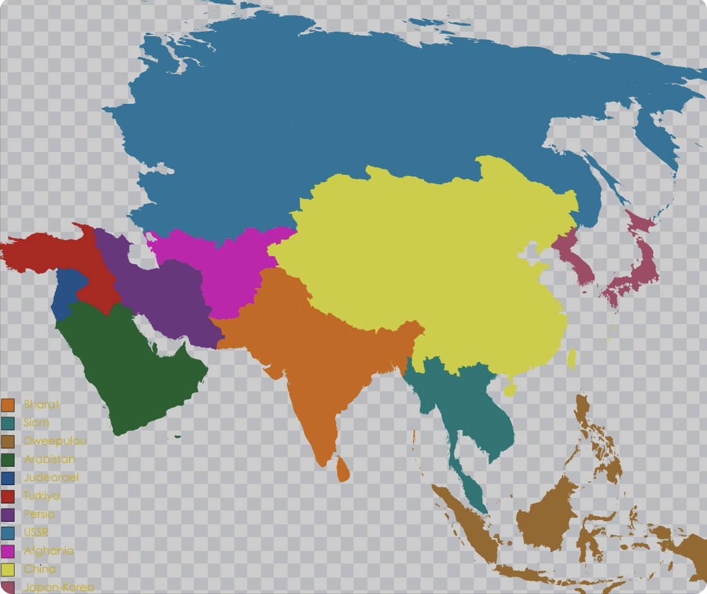
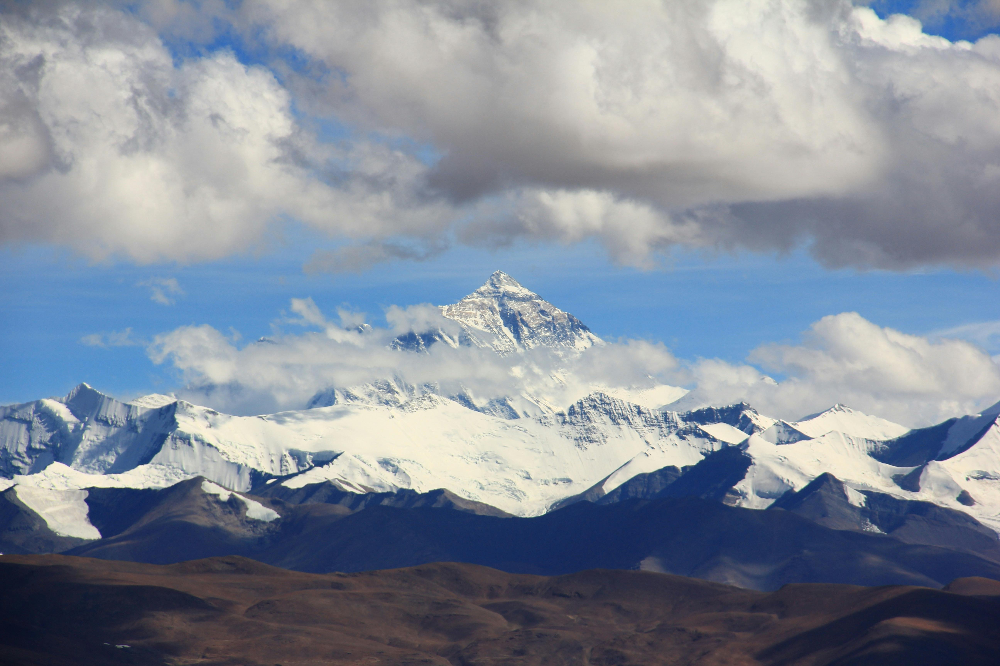
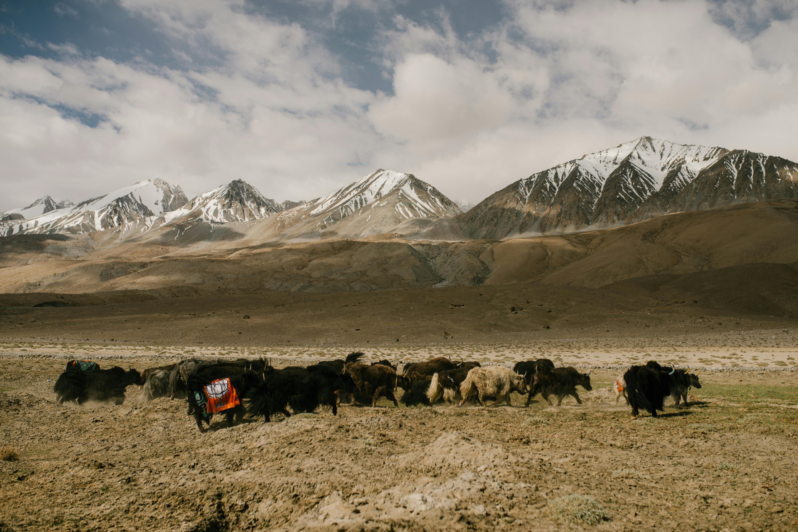
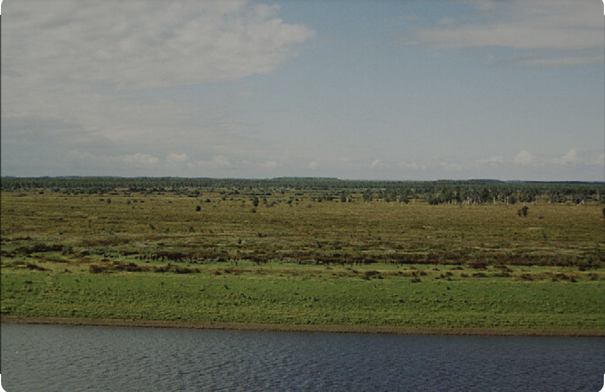
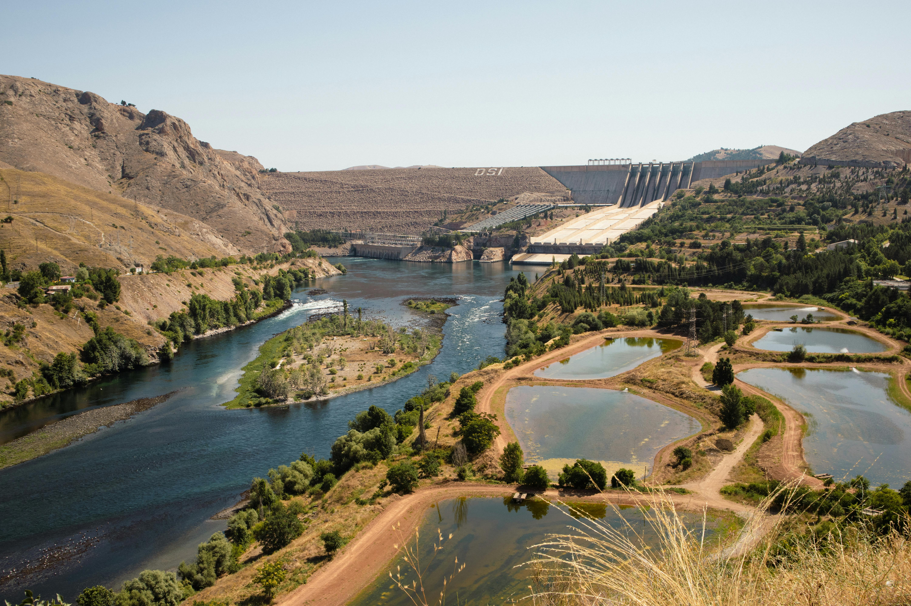

Asia
<<<<<<< HEADGeography
Asia, the largest continent, covers 30% of Earth’s land area and is home to 60% of the world’s population. It is characterized by a diverse landscape divided into five major physical regions: mountain systems, plateaus, plains and deserts, freshwater environments, and saltwater environments. Each region shapes the continent's unique geography, culture, and ecosystems, making Asia a key player in global history and ecological significance.
Asia's Borders
Asia occupies the eastern part of the Eurasian supercontinent, bordered by the Arctic, Pacific, and Indian Oceans. Its western border with Europe follows an irregular line marked by the Ural and Caucasus Mountains, the Caspian Sea, and the Black Sea. While oceans provide clear boundaries, the division between Asia and Europe is often debated due to overlapping geographical and political factors. Historically, the names “Asia” and “Europe” may derive from Mesopotamian words for “sunrise” and “sunset.” The concept of Eurasia as a unified supercontinent has gained importance in geopolitics, particularly in fostering connections between Russia, China, and countries like Kazakhstan.
Mountain Systems
Asia hosts several prominent mountain ranges. The Himalayas, stretching 2,500 kilometers, separate the Indian subcontinent from the rest of Asia. Formed by tectonic collision, they continue to grow and include Mount Everest, the worlds tallest peak at 8,850 meters. The Tien Shan, or “Celestial Mountains,” straddles Kyrgyzstan and China, with peaks like Victory Peak (7,439 meters). The ancient Ural Mountains in Russia and Kazakhstan are much older and less elevated, averaging 914 to 1,220 meters.
Plateaus
Asias plateaus vary in size and significance. The Tibetan Plateau, the worlds largest and highest, averages 4,500 meters in elevation and feeds many major rivers, sustaining over 2 billion people. The Iranian Plateau spans Iran, Afghanistan, and Pakistan, with high deserts and volcanic peaks like Mount Damavand. The Deccan Plateau in southern India is bordered by the Eastern and Western Ghats and is home to centuries-old temples and mosques.
Plains, Steppes, and Deserts
The West Siberian Plain, one of the worlds flattest areas, features vast swamps and supports reindeer herding communities. Central Asia’s steppes, including Mongolia’s arid and desert zones, transition to the Gobi Desert in the south. The Rub’ al Khali, or Empty Quarter, is the largest sand desert, spanning Saudi Arabia and neighboring countries, with archaeological evidence of prehistoric life.
Freshwater Regions
Asia’s freshwater systems are crucial to its ecology and civilizations. Lake Baikal in Russia is the world’s deepest and oldest lake, holding 20% of the planet’s unfrozen fresh water. Rivers like the Yangtze in China, the longest in Asia, support vast populations and economic activity, while the Tigris and Euphrates, central to ancient Mesopotamian civilizations, face modern threats from damming and desertification.
Saltwater Regions
Asia’s saltwater bodies influence its geography and economy. The Persian Gulf, rich in oil reserves, borders several countries and drives geopolitical tensions. The Bay of Bengal, the world’s largest bay, supports diverse ecosystems and sacred rivers like the Ganges, while the icy Sea of Okhotsk presents navigation challenges during winter.

Biodiversity
Asia is the largest continent on Earth, boasting an incredible diversity of ecosystems and species. Its vast size allows for the greatest range of climates, from the icy tundras of Siberia to the steamy tropical forests of Southeast Asia.
Asia is home to some of the world's most iconic animals, such as tigers, pandas, snow leopards, and Asian elephants. These species are not only emblematic of the continent but are also integral to their ecosystems. Asia's plant life is equally diverse, with delicate cherry blossoms painting the landscapes of Japan in spring and vast bamboo forests providing crucial habitats for animals like the giant panda
Ecosystems
The continent's major ecosystems are as varied as its landscapes. In the north, the Siberian tundra and boreal forests stretch for thousands of miles, dominated by hardy conifers and supporting species like reindeer and wolves.
In the tropical regions of Southeast Asia, lush rainforests teem with life, from colorful birds and reptiles to rare primates like orangutans. Meanwhile, the towering Himalayas, the world's highest mountain range, host unique high-altitude cosystems. These support species such as the snow leopard and yaks, along with a variety of alpine plants that have adapted to the thin air and cold temperatures.
Conservation
Conservation efforts across Asia are critical due to the continent's growing urbanization and agricultural expansion, which lead to significant habitat loss. Tigers, once widespread across Asia, now face extinction in many regions, prompting focused conservation projects like tiger reserves in India.
Click the image below to reveal a fun fact:

Similarly, efforts to protect giant pandas in China have included the creation of specialized reserves and breeding programs, helping to slowly stabilize their population. While these efforts are encouraging, much work remains to address the threats posed by deforestation, pollution, and climate change, ensuring Asia's unique ecological heritage endures for future generations.